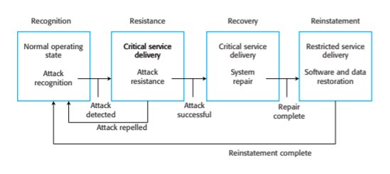
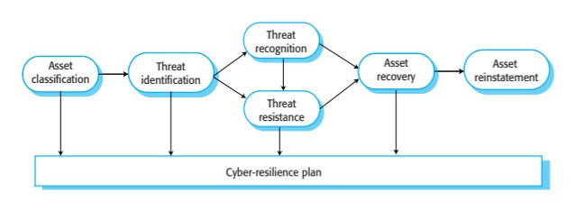
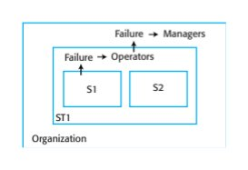
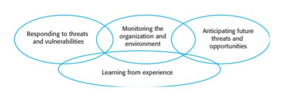
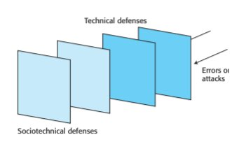
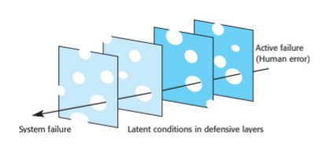
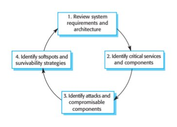
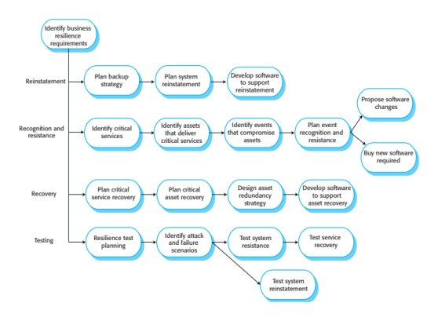
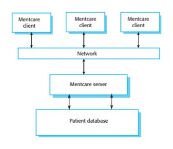
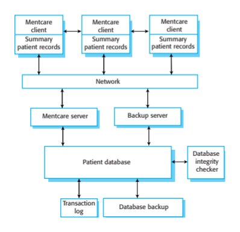

Chapter 14 · Resilience Engineering
Source review
The original source text, examples, tables and caveats remain available. Source slide numbers and textbook PDF pages are different references. Historical assertions stay attributed to this edition; this page is not a current legal, medical, regulatory or product guide. Classroom activities are labelled separately.
Required selections
- Sociotechnical and organizational resilience: original slides 18–23
- Survivability analysis: original slides 42–45
Apply one named source concept to the chapter artifact and explain its effect. Finish any uncompleted core topic here; material does not become optional merely because it is reviewed after class. Assignment dates and marks remain in Blackboard.
Original source-slide ledger
Slide 1 · Chapter 14 – Resilience Engineering
Slide 2 · Topics covered
Topics covered Cybersecurity Sociotechnical resilience Resilient systems design
Slide 3 · Resilience
Resilience The resilience of a system is a judgment of how well that system can maintain the continuity of its critical services in the presence of disruptive events, such as equipment failure and cyberattacks. Cyberattacks by malicious outsiders are perhaps the most serious threat faced by networked systems but resilience is also intended to cope with system failures and other disruptive events.
Slide 4 · Essential resilience ideas
Essential resilience ideas The idea that some of the services offered by a system are critical services whose failure could have serious human, social or economic effects. The idea that some events are disruptive and can affect the ability of a system to deliver its critical services. The idea that resilience is a judgment – there are no resilience metrics and resilience cannot be measured. The resilience of a system can only be assessed by experts, who can examine the system and its operational processes.
Slide 5 · Resilience engineering assumptions
Resilience engineering assumptions Resilience engineering assumes that it is impossible to avoid system failures and so is concerned with limiting the costs of these failures and recovering from them. Resilience engineering assumes that good reliability engineering practices have been used to minimize the number of technical faults in a system. It therefore places more emphasis on limiting the number of system failures that arise from external events such as operator errors or cyberattacks.
Slide 6 · Resilience activities
Resilience activities Recognition The system or its operators should recognise early indications of system failure. Resistance If the symptoms of a problem or cyberattack are detected early, then resistance strategies may be used to reduce the probability that the system will fail. Recovery If a failure occurs, the recovery activity ensures that critical system services are restored quickly so that system users are not badly affected by failure. Reinstatement In this final activity, all of the system services are restored and normal system operation can continue.
Slide 7 · Resistance
Resistance Resistance strategies may focus on isolating critical parts of the system so that they are unaffected by problems elsewhere. Resistance includes proactive resistance where defences are included in a system to trap problems and reactive resistance where actions are taken when a problem is discovered.
Slide 8 · Resilience activities
Resilience activities
Slide 9 · Cybersecurity
Cybersecurity
Slide 10 · Cybersecurity
Cybersecurity Cybercrime is the illegal use of networked systems and is one of the most serious problems facing our society. Cybersecurity is a broader topic than system security engineering Cybersecurity is a sociotchnical issue covering all aspects of ensuring the protection of citizens, businesses and critical infrastructures from threats that arise from their use of computers and the Internet. Cybersecurity is concerned with all of an organization’s IT assets from networks through to application systems.
Slide 11 · Factors contributing to cybersecurity failure
Factors contributing to cybersecurity failure organizational ignorance of the seriousness of the problem, poor design and lax application of security procedures, human carelessness, inappropriate trade-offs between usability and security.
Slide 12 · Cybersecurity threats
Cybersecurity threats Threats to the confidentiality of assets Data is not damaged but it is made available to people who should not have access to it. Threats to the integrity of assets These are threats where systems or data are damaged in some way by a cyberattack. Threats to the availability of assets These are threats that aim to deny use of assets by authorized users.
Slide 13 · Examples of controls
Examples of controls Authentication, where users of a system have to show that they are authorized to access the system Encryption, where data is algorithmically scrambled so that an unauthorized reader cannot access the information. Firewalls, where incoming network packets are examined then accepted or rejected according to a set of organizational rules. Firewalls can be used to ensure that only traffic from trusted sources is passed from the external Internet into the local organizational network.
Slide 14 · Redundancy and diversity
Redundancy and diversity Copies of data and software should be maintained on separate computer systems. This supports recovery after a successful cyberattack. (recovery and reinstatement) Multi-stage diverse authentication can protect against password attacks. This is a resistance measure Critical servers may be over-provisioned i.e. they may be more powerful than is required to handle their expected load. Attacks can be resisted without serious service degradation.
Slide 15 · Cyber-resilience planning
Cyber-resilience planning
Slide 16 · Cyber resilience planning
Cyber resilience planning Asset classification The organization’s hardware, software and human assets are examined and classified depending on how essential they are to normal operations. Threat identification For each of the assets (or, at least the critical and important assets), you should identify and classify threats to that asset. Threat recognition For each threat or, sometimes asset/threat pair, you should identify how an attack based on that threat might be recognised.
Slide 17 · Cyber resilience planning
Cyber resilience planning Threat resistance For each threat or asset/threat pair, you should identify possible resistance strategies. These may be either embedded in the system (technical strategies) or may rely on operational procedures. Asset recovery For each critical asset or asset/threat pair, you should work out how that asset could be recovered in the event of a successful cyberattack. Asset reinstatement This is a more general process of asset recovery where you define procedures to bring the system back into normal operation.
Slide 18 · Sociotechnical resilience
Sociotechnical resilience
Slide 19 · Sociotechnical resilience
Sociotechnical resilience Resilience engineering is concerned with adverse external events that can lead to system failure. To design a resilient system, you have to think about sociotechnical systems design and not exclusively focus on software. Dealing with these events is often easier and more effective in the broader sociotechnical system.
Slide 20 · Mentcare example
Mentcare example Cyberattack may aim to steal data, gaining access using a legitimate user’s credentials Technical solution may be to use more complex authentication procedures. These irritate users and may reduce security as users leave systems unattended without logging out. A better strategy may be to introduce organizational policies and procedures that emphasise the importance of not sharing login credentials and that tell users about easy ways to create and maintain strong passwords.
Slide 21 · Nested technical and sociotechnical systems
Nested technical and sociotechnical systems
Slide 22 · Failure hierarchy
Failure hierarchy A failure in system S1 may be trapped in the broader sociotechnical system ST1 through operator actions Organizational damage is therefore limited If the failure in S1 leads to a failure in ST1, then it is up to managers in the broader organization to deal with that failure.
Slide 23 · Characteristics of resilient organizations
Characteristics of resilient organizations
Slide 24 · Organizational resilience
Organizational resilience There are four characteristics that reflect the resilience of an organization Responsiveness, monitoring, anticipation, learning The ability to respond Organizations have to be able to adapt their processes and procedures in response to risks. These risks may be anticipated risks or may be detected threats to the organization and its systems. The ability to monitor Organizations should monitor both their internal operations and their external environment for threats before they arise.
Slide 25 · Organizational resilience
Organizational resilience The ability to anticipate A resilient organization should not simply focus on its current operations but should anticipate possible future events and changes that may affect its operations and resilience. The ability to learn Organizational resilience can be improved by learning from experience. It is particularly important to learn from successful responses to adverse events such as the effective resistance of a cyberattack. Learning from success allows
Slide 26 · Human error
Human error People inevitably make mistakes (human errors) that sometimes lead to serious system failures. There are two ways to consider human error The person approach. Errors are considered to be the responsibility of the individual and ‘unsafe acts’ (such as an operator failing to engage a safety barrier) are a consequence of individual carelessness or reckless behaviour. The systems approach. The basic assumption is that people are fallible and will make mistakes. People make mistakes because they are under pressure from high workloads, poor training or because of inappropriate system design.
Slide 27 · Systems approach
Systems approach Systems engineers should assume that human errors will occur during system operation. To improve the resilience of a system, designers have to think about the defences and barriers to human error that could be part of a system. Can these barriers should be built into the technical components of the system (technical barriers)? If not, they could be part of the processes, procedures and guidelines for using the system (sociotechnical barriers).
Slide 28 · Defensive layers
Defensive layers
Slide 29 · Defensive layers
Defensive layers You should use redundancy and diversity to create a set of defensive layers, where each layer uses a different approach to deter attackers or trap technical/human failures. ATC system examples Conflict alert system Formalized recording procedures Collaborative checking
Slide 30 · Reason’s Swiss Cheese Model
Reason’s Swiss Cheese Model
Slide 31 · Swiss Cheese model
Swiss Cheese model Defensive layers have vulnerabilities They are like slices of Swiss cheese with holes in the layer corresponding to these vulnerabilities. Vulnerabilities are dynamic The ‘holes’ are not always in the same place and the size of the holes may vary depending on the operating conditions. System failures occur when the holes line up and all of the defenses fail.
Slide 32 · Increasing system resilience
Increasing system resilience Reduce the probability of the occurrence of an external event that might trigger system failures. Increase the number of defensive layers. The more layers that you have in a system, the less likely it is that the holes will line up and a system failure occur. Design a system so that diverse types of barriers are included. The ‘holes’ will probably be in different places and so there is less chance of the holes lining up and failing to trap an error. Minimize the number of latent conditions in a system. This means reducing the number and size of system ‘holes’.
Slide 33 · Operational and management processes
Operational and management processes All software systems have associated operational processes that reflect the assumptions of the designers about how these systems will be used. For example, in an imaging system in a hospital, the operator may have the responsibility of checking the quality of the images immediately after these have been processed. This allows the imaging procedure to be repeated if there is a problem.
Slide 34 · Operational processes
Operational processes Operational processes are the processes that are involved in using the system for its defined purpose. For new systems, these operational processes have to be defined and documented during the system development process. Operators may have to be trained and other work processes adapted to make effective use of the new system.
Slide 35 · Personal and Enterprise IT processes
Personal and Enterprise IT processes For personal systems, the designers may describe the expected use of the system but have no control over how users will actually behave. For enterprise IT systems, however, there may be training for users to teach them how to use the system. Although user behaviour cannot be controlled, it is reasonable to expect that they will normally follow the defined process.
Slide 36 · Process design
Process design Operational and management processes are an important defense mechanism and, in designing a process, you need to find a balance between efficient operation and problem management. Process improvement focuses on identifying and codifying good practice and developing software to support this. If process improvement focuses on efficiency, then this can make it more difficult to deal with problems when these arise.
Slide 37 · Efficiency and resilience
Efficiency and resilience
Slide 38 · Coping with failures
Coping with failures What seems to be ‘inefficient’ practice often arises because people maintain redundant information or share information because they know this makes it easier to deal with problems when things go wrong. When things go wrong, operators and system managers can often recover the situation although this may sometimes mean that they have to break rules and ‘work around’ the defined process. You should therefore design operational processes to be flexible and adaptable.
Slide 39 · Information provision and management
Information provision and management To make a process more efficient, it may make sense to present operators with the information that they need, when they need it. If operators are only presented with information that the process designer thinks that they ‘need to know’ then they may be unable to detect problems that do not directly affect their immediate tasks. When things go wrong, the system operators do not have a broad picture of what is happening in the system, so it is more difficult for them to formulate strategies for dealing with problems.
Slide 40 · Process automation
Process automation Process automation can have both positive and negative effects on system resilience. If the automated system works properly, it can detect problems, invoke cyberattack resistance if necessary and start automated recovery procedures. However, if the problem can’t be handled by the automated system, there are fewer people available to tackle the problem and the system may have been damaged by the process automation doing the wrong thing.
Slide 41 · Disadvantages of process automation
Disadvantages of process automation Automated management systems may go wrong and take incorrect actions. As problems develop, the system may take unexpected actions that make the situation worse and which cannot be understood by the system managers. Problem solving is a collaborative process. If fewer managers are available, it is likely to take longer to work out a strategy to recover from a problem or cyberattack.
Slide 42 · Resilient systems design
Resilient systems design
Slide 43 · Resilient systems design
Resilient systems design Identifying critical services and assets Critical services and assets are those elements of the system that allow a system to fulfill its primary purpose. For example, the critical services in a system that handles ambulance dispatch are those concerned with taking calls and dispatching ambulances. Designing system components that support problem recognition, resistance, recovery and reinstatement For example, in an ambulance dispatch system, a watchdog timer may be included to detect if the system is not responding to events.
Slide 44 · Survivable systems analysis
Survivable systems analysis System understanding For an existing or proposed system, review the goals of the system (sometimes called the mission objectives), the system requirements and the system architecture. Critical service identification The services that must always be maintained and the components that are required to maintain these services are identified.
Slide 45 · Survivable systems analysis
Survivable systems analysis Attack simulation Scenarios or use cases for possible attacks are identified along with the system components that would be affected by these attacks. Survivability analysis Components that are both essential and compromisable by an attack are identified and survivability strategies based on resistance, recognition and recovery are identified.
Slide 46 · Stages in survivability analysis
Stages in survivability analysis
Slide 47 · Problems for business systems
Problems for business systems The fundamental problem with this approach to survivability analysis is that its starting point is the requirements and architecture documentation for a system. However for business systems: It is not explicitly related to the business requirements for resilience. I believe that these are a more appropriate starting point than technical system requirements. It assumes that there is a detailed requirements statement for a system. In fact, resilience may have to be ‘retrofitted’ to a system where there is no complete or up-to-date requirements document.
Slide 48 · Resilience engineering
Resilience engineering
Slide 49 · Streams of work in resilience engineering
Streams of work in resilience engineering Identify business resilience requirements Plan how to reinstate systems to their normal operating state Identify system failures and cyberattacks that can compromise a system Plan how to recover critical services quickly after damage or a cyberattack Test all aspects of resilience planning
Slide 50 · Maintaining critical service availability
Maintaining critical service availability To maintain availability, you need to know: the system services that are the most critical for a business, the minimal quality of service that must be maintained, how these services might be compromised, how these services can be protected, how you can recover quickly if the services become unavailable. Critical assets are identified during service analysis. Assets may be hardware, software, data or people.
Slide 51 · Mentcare system resilience
Mentcare system resilience The Mentcare system is a system used to support clinicians treating patients that suffer from mental health problems. It provides patient information and records of consultations with doctors and nurses. It includes checks that can flag patients who may be dangerous or suicidal. Based on a client-server architecture.
Slide 52 · Client-server architecture (Mentcare)
Client-server architecture (Mentcare)
Slide 53 · Critical Mentcare services
Critical Mentcare services An information service that provides information about a patient’s current diagnosis and treatment plan. A warning service that highlights patients that could pose a danger to others or to themselves. Availability of the complete patient record is NOT a critical service as routine patient information is not normally required during consultations.
Slide 54 · Assets required for normal service operation
Assets required for normal service operation The patient record database that maintains all patient information. A database server that provides access to the database for local client computers. A network for client/server communication. Local laptop or desktop computers used by clinicians to access patient information. A set of rules to identify patients who are potentially dangerous and which can flag patient records. Client software that highlights dangerous patients to system users.
Slide 55 · Adverse events
Adverse events Unavailability of the database server either through a system failure, a network failure or a denial of service cyberattack Deliberate or accidental corruption of the patient record database or the rules that define what is meant by a ‘dangerous patient’ Infection of client computers with malware Access to client computers by unauthorized people who gain access to patient records
Slide 56 · Recognition and resistance strategies
Recognition and resistance strategies
Slide 57 · Mentcare system resilience
Mentcare system resilience
Slide 58 · Architecture for resilience
Architecture for resilience Summary patient records that are maintained on local client computers. The local computers can communicate directly with each other and exchange information using either the system network or using an ad hoc network created using mobile phones. If the database is unavailable, doctors and nurses can still access essential patient information. A backup server to allow for main server failure. This server is responsible for taking regular snapshots of the database as backups. In the event of the failure of the main server, it can also act as the main server for the whole system.
Slide 59 · Architecture for resilience
Architecture for resilience Database integrity checking and recovery software. Integrity checking runs as a background task checking for signs of database corruption. If corruption is discovered, it can automatically initiate the recovery of some or all of the data from backups. The transaction log allows these backups to be updated with details of recent changes
Slide 60 · Critical service maintenance
Critical service maintenance By downloading information to the client at the start of a clinic session, the consultation can continue without server access. Only the information about the patients who are scheduled to attend consultations that day needs to be downloaded. The service that provides a warning to staff of patients that may be dangerous can be implemented using this approach. The records of possibly patients who may harm themselves or others are identified before the download process. When clinical staff access these records, the software can highlight them to indicate that this is a patient that requires special care.
Slide 61 · Risks to confidentiality
Risks to confidentiality To minimize risks to confidentiality that arise from multiple copies of information on laptops: Only download the summary records of patients who are scheduled to attend a clinic. This limits the numbers of records that could be compromised. Encrypt the disk on local client computers. An attacker who does not have the encryption key cannot read the disk if they gain access to the computer. Securely delete the downloaded information at the end of a clinic session. This further reduces the chances of an attacker gaining access to confidential information. Ensure that all network transactions are encrypted. If an attacker intercepts these transactions, they cannot get access to the information.
Slide 62 · Key points
Key points Resilience is a judgment of how well a system can maintain the continuity of its critical services in the presence of disruptive events. Resilience should be based on the 4 R’s model – recognition, resistance, recovery and reinstatement. Resilience planning should be based on the assumption of cyberattacks by malicious insiders and outsiders and that some of these attacks will be successful. Systems should be designed with defensive layers of different types. These layers trap human and technical failures and help resist cyberattacks.
Slide 63 · Key points
Key points To allow system operators and managers to cope with problems, processes should be flexible and adaptable. Process automation can make it more difficult for people to cope with problems. Business resilience requirements should be the starting point for designing systems for resilience. To achieve system resilience, you have to focus on recognition and recovery from problems, recovery of critical services and assets and reinstatement of the system. An important part of design for resilience is identifying critical services. Systems should be designed so that these services are protected and, in the event of failure, recovered as quickly as possible.
Preserved original source illustrations
Select a figure to inspect it at its original size. The original PDF/PPTX retains its full layout and vector diagrams.










Supplied textbook chapter · complete text
The PDF remains authoritative for mathematical layout, figures and tables. Line wrapping and extraction artifacts may occur below; no textbook statement is replaced by a contemporary claim.
PDF page 1 · printed page 408
14
Resilience engineering
Objectives
The objective of this chapter is to introduce the idea of resilience
engineering where systems are designed to withstand adverse
external events such as operator errors and cyberattacks. When you
have read this chapter, you will:
■ understand the differences between resilience, reliability, and
security and why resilience is important for networked systems;
■ be aware of the fundamental issues in building resilient systems,
namely, recognition of problems, resistance to failures and
attacks, recovery of critical services, and system reinstatement;
■ understand why resilience is a sociotechnical rather than a
technical issue and the role of system operators and managers in
providing resilience;
■ have been introduced to a system design method that supports
resilience.
Contents
14.1 Cybersecurity
14.2 Sociotechnical resilience
14.3 Resilient systems designPDF page 2 · printed page 409
Chapter 14 ■ Resilience engineering 409
In April 1970, the Apollo 13 manned mission to the moon suffered a catastrophic
failure. An oxygen tank exploded in space, resulting in a serious loss of atmospheric
oxygen and oxygen for the fuel cells that powered the spacecraft. The situation was
life threatening, with no possibility of rescue. There were no contingency plans for
this situation. However, by using equipment in unintended ways and by adapting
standard procedures, the combined efforts of the spacecraft crew and ground staff
worked around the problems. The spacecraft was brought back to earth safely, and
all the crew survived. The overall system (people, equipment, and processes) was
resilient. It adapted to cope with and recover from the failure.
I introduced the idea of resilience in Chapter 10, as one of the fundamental
attributes of system dependability. I defined resilience in Chapter 10 as:
The resilience of a system is a judgment of how well that system can maintain
the continuity of its critical services in the presence of disruptive events, such
as equipment failure and cyberattacks.
This is not a “standard” definition of resilience—different authors such as Laprie
(Laprie 2008) and Hollnagel (Hollnagel 2006) propose general definitions based on
the ability of a system to withstand change. That is, a resilient system is one that can
operate successfully when some of the fundamental assumptions made by the system
designers no longer hold.
For example, an initial design assumption may be that users will make mistakes
but will not deliberately seek out system vulnerabilities to be exploited. If the system
is used in an environment where it may be subject to cyberattacks, this is no longer
true. A resilient system can cope with the environmental change and can continue to
operate successfully.
While these definitions are more general, my definition of resilience is closer to
how the term is now used in practice by governments and industry. It embeds three
essential ideas:
1. The idea that some of the services offered by a system are critical services
whose failure could have serious human, social, or economic effects.
2. The idea that some events are disruptive and can affect the ability of a system to
deliver its critical services.
3. The idea that resilience is a judgment—there are no resilience metrics, and
resilience cannot be measured. The resilience of a system can only be assessed
by experts, who can examine the system and its operational processes.
Fundamental work on system resilience started in the safety-critical systems
community, where the aim was to understand what factors led to accidents being avoided
and survived. However, the increasing number of cyberattacks on networked systems has
meant that resilience is now often seen as a security issue. It is essential to build systems
that can withstand malicious cyberattacks and continue to deliver services to their users.PDF page 3 · printed page 410
410 Chapter 14 ■ Resilience engineering
Obviously, resilience engineering is closely related to reliability and security
engineering. The aim of reliability engineering is to ensure that systems do not fail.
A system failure is an externally observable event, which is often a consequence of
a fault in the system. Therefore, techniques such as fault avoidance and fault toler-
ance, as discussed in Chapter 11, have been developed to reduce the number of sys-
tem faults and to trap faults before they lead to system failure.
In spite of our best efforts, faults will always be present in a large, complex sys-
tem, and they may lead to system failure. Delivery schedules are short, and testing
budgets are limited. Development teams are working under pressure, and it is practi-
cally impossible to detect all of the faults and security vulnerabilities in a software
system. We are building systems that are so complex (see Chapter 19) that we cannot
possibly understand all of the interactions between the system components. Some of
these interactions may be a trigger for overall system failure.
Resilience engineering does not focus on avoiding failure but rather on accepting
the reality that failures will occur. It makes two important assumptions:
1. Resilience engineering assumes that it is impossible to avoid system failures and
so is concerned with limiting the costs of these failures and recovering from them.
2. Resilience engineering assumes that good reliability engineering practices have
been used to minimize the number of technical faults in a system. It therefore
places more emphasis on limiting the number of system failures that arise from
external events such as operator errors or cyberattacks.
In practice, technical system failures are often triggered by events that are external
to the system. These events may involve operator actions or user errors that are unex-
pected. Over the last few years, however, as the number of networked systems has
increased, these events have often been cyberattacks. In a cyberattack, a malicious
person or group tries to damage the system or to steal confidential information. These are
now more significant than user or operator errors as a potential source of system failure.
Because of the assumption that failures will inevitably occur, resilience engineer-
ing is concerned with both the immediate recovery from failure to maintain critical
services and the longer-term reinstatement of all system services. As I discuss in
Section 14.3, this means that system designers have to include system features to
maintain the state of the system’s software and data. In the event of a failure, essential
information may then be restored.
Four related resilience activities are involved in the detection of and recovery
from system problems:
1. Recognition The system or its operators should be able to recognize the symp-
toms of a problem that may lead to system failure. Ideally, this recognition
should be possible before the failure occurs.
2. Resistance If the symptoms of a problem or signs of a cyberattack are detected
early, then resistance strategies may be invoked that reduce the probability that the
system will fail. These resistance strategies may focus on isolating critical parts of
the system so that they are unaffected by problems elsewhere. Resistance includesPDF page 4 · printed page 411
Chapter 14 ■ Resilience engineering 411
Recognition Resistance Recovery Reinstatement
Normal operating Critical service Critical service Restricted service
state delivery delivery delivery
Attack Attack System Software and data
recognition resistance repair restoration
Attack Attack Repair
detected successful complete
Attack repelled
Reinstatement complete
Figure 14.1 Resilience
activities proactive resistance where defenses are included in a system to trap problems and
reactive resistance where actions are taken when a problem is discovered.
3. Recovery If a failure occurs, the aim of the recovery activity is to ensure that
critical system services are restored quickly so that system users are not seri-
ously affected by the failure.
4. Reinstatement In this final activity, all of the system services are restored, and
normal system operation can continue.
These activities lead to changes to the system state as shown in Figure 14.1,
which shows the state changes in the system in the event of a cyberattack. In parallel
with normal system operation, the system monitors network traffic for possible
cyberattacks. In the event of a cyberattack, the system moves to a resistance state in
which normal services may be restricted.
If resistance successfully repels the attack, normal service is resumed. Otherwise, the
system moves to a recovery state where only critical services are available. Repairs to the
damage caused by the cyberattack are carried out. Finally, when repairs are complete,
the system moves to a reinstatement state. In this state, the system’s services are incre-
mentally restored. Finally, when all restoration is complete, normal service is resumed.
As the Apollo 13 example illustrates, resilience cannot be “programmed in” to a
system. It is impossible to anticipate everything that might go wrong and every con-
text where problems might arise. The key to resilience, therefore, is flexibility and
adaptability. As I discuss in Section 14.2, it should be possible for system operators
and managers to take actions to protect and repair the system, even if these actions
are abnormal or are normally disallowed.
Increasing the resilience of a system of course has significant costs. Software
may have to be purchased or modified, and additional investments made in hardware
or cloud services to provide backup systems that can be used in the event of a system
failure. The benefits from these costs are impossible to calculate because the losses
from a failure or attack can only be calculated after the event.
Companies may therefore be reluctant to invest in resilience if they have never
suffered a serious attack or associated loss. However, the increasing number ofPDF page 5 · printed page 412
412 Chapter 14 ■ Resilience engineering
high-profile cyberattacks that have damaged business and government systems have
increased awareness of the need for resilience. It is clear that losses can be very
significant, and sometimes businesses may not survive a successful cyberattack.
Therefore, there is increasing investment in resilience engineering to reduce the
business risks associated with system failure.
14.1 Cybersecurity
Maintaining the security of our networked infrastructure and government, business,
and personal computer systems is one of the most significant problems facing our
society. The ubiquity of the Internet and our dependence on computer systems have
created new criminal opportunities for theft and social disruption. It is very difficult
to measure the losses due to cybercrime. However, in 2013, it was estimated that
losses to the global economy due to cybercrime were between $100 billion and $500
billion (InfoSecurity 2013).
As I suggested in Chapter 13, cybersecurity is a broader issue than system security
engineering. Software security engineering is a primarily technical activity that focuses
on techniques and technologies to ensure that application systems are secure.
Cybersecurity is a sociotechnical concern. It covers all aspects of ensuring the protection
of citizens, businesses, and critical infrastructures from threats that arise from their use
of computers and the Internet. While technical issues are important, technology on its
own cannot guarantee security. Factors that contribute to cybersecurity failures include:
■ organizational ignorance of the seriousness of the problem,
■ poor design and lax application of security procedures,
■ human carelessness, and
■ inappropriate trade-offs between usability and security.
Cybersecurity is concerned with all of an organization’s IT assets from networks
through to application systems. The vast majority of these assets are externally procured,
and companies do not understand their detailed operation. Systems such as web brows-
ers are large and complex programs, and inevitably they contain bugs that can be a
source of vulnerability. The different systems in an organization are related to each other
in many different ways. They may be stored on the same disk, share data, rely on com-
mon operating systems components, and so on. The organizational “system of systems”
is incredibly complex. It is impossible to ensure that it is free of security vulnerabilities.
Consequently, you should generally assume that your systems are vulnerable to
cyberattack and that, at some stage, a cyberattack is likely to occur. A successful
cyberattack can have very serious financial consequences for businesses, so it is
essential that attacks are contained and losses minimized. Effective resilience engi-
neering at the organizational and systems levels can repel attacks and bring systems
back into operation quickly and so limit the losses incurred.PDF page 6 · printed page 413
14.1 ■ Cybersecurity 413
In Chapter 13, where I discussed security engineering, I introduced concepts that
are fundamental to resilience planning. Some of these concepts are:
1. Assets, which are systems and data that have to be protected. Some assets are
more valuable than others and so require a higher level of protection.
2. Threats, which are circumstances that can cause harm by damaging or stealing
organizational IT infrastructure or system assets.
3. Attacks, which are manifestations of a threat where an attacker aims to damage
or steal IT assets, such as websites or personal data.
Three types of threats have to be considered in resilience planning:
1. Threats to the confidentiality of assets In this case, data is not damaged, but it is
made available to people who should not have access to it. An example of a
threat to confidentiality is when a credit card database held by a company is
stolen, with the potential for illegal use of card information.
2. Threats to the integrity of assets These are threats where systems or data are
damaged in some way by a cyberattack. This may involve introducing a virus or
a worm into software or corrupting organizational databases.
3. Threats to the availability of assets These are threats that aim to deny use of
assets by authorized users. The best-known example is a denial-of-service attack
that aims to take down a website and so make it unavailable for external use.
These are not independent threat classes. An attacker may compromise the integ-
rity of a user’s system by introducing malware, such as a botnet component. This
may then be invoked remotely as part of a distributed denial-of-service attack on
another system. Other types of malware may be used to capture personal details and
so allow confidential assets to be accessed.
To counter these threats, organizations should put controls in place that make it
difficult for attackers to access or damage assets. It is also important to raise aware-
ness of cybersecurity issues so that people know why these controls are important
and so are less likely to reveal information to an attacker.
Examples of controls that may be used are:
1. Authentication, where users of a system have to show that they are authorized to
access the system. The familiar login/password approach to authentication is a
universally used but rather weak control.
2. Encryption, where data is algorithmically scrambled so that an unauthorized
reader cannot access the information. Many companies now require that laptop
disks are encrypted. If the computer is lost or stolen, this reduces the likelihood
that the confidentiality of the information will be breached.
3. Firewalls, where incoming network packets are examined, then accepted or
rejected according to a set of organizational rules. Firewalls can be used toPDF page 7 · printed page 414
414 Chapter 14 ■ Resilience engineering
ensure that only traffic from trusted sources is allowed to pass from the external
Internet into the local organizational network.
A set of controls in an organization provides a layered protection system. An
attacker has to get through all of the protection layers for the attack to succeed.
However, there is a trade-off between protection and efficiency. As the number of
layers of protection increases, the system slows down. The protection systems con-
sume an increasing amount of memory and processor resources, leaving less availa-
ble to do useful work. The more security, the more inconvenient it is for users and
the more likely that they will adopt insecure practices to increase system usability.
As with other aspects of system dependability, the fundamental means of protect-
ing against cyberattacks depends on redundancy and diversity. Recall that redun-
dancy means having spare capacity and duplicated resources in a system. Diversity
means that different types of equipment, software, and procedures are used so that
common failures are less likely to occur across a number of systems. Examples of
where redundancy and diversity are valuable for cyber-resilience are:
1. For each system, copies of data and software should be maintained on separate
computer systems. Shared disks should be avoided if possible. This supports
recovery after a successful cyberattack (recovery and reinstatement).
2. Multi-stage diverse authentication can protect against password attacks. As well
as login/password authentication, additional authentication steps may be
involved that require users to provide some personal information or a code gen-
erated by their mobile device (resistance).
3. Critical servers may be overprovisioned; that is, they may be more powerful
than is required to handle their expected load. The spare capacity means that
attacks may be resisted without necessarily degrading the normal response of
the server. Furthermore, if other servers are damaged, spare capacity is available
to run their software while they are being repaired (resistance and recovery).
Planning for cybersecurity has to be based on assets and controls and the 4 Rs of resil-
ience engineering—recognition, resistance, recovery, and reinstatement. Figure 14.2
shows a planning process that may be followed. The key stages in this process are:
1. Asset classification The organization’s hardware, software, and human assets
are examined and classified depending on how essential they are to normal
operations. They may be classed as critical, important, or useful.
2. Threat identification For each of the assets (or at least the critical and important
assets), you should identify and classify threats to that asset. In some cases, you
may try to estimate the probability that a threat will arise, but such estimates are
often inaccurate as you don’t have enough information about potential attackers.
3. Threat recognition For each threat or, sometimes asset/threat pair, you should
identify how an attack based on that threat might be recognized. You mayPDF page 8 · printed page 415
14.1 ■ Cybersecurity 415
Threat
recognition
InterfaceAsset IntegrationThreat and InterfaceAsset IntegrationAsset and
developmentclassification identificationdeployment developmentrecovery reinstatementdeployment
Threat
resistance
Cyber-resilience plan
Figure 14.2 Cyber- decide that additional software needs to be bought or written for threat recogni-
resilience planning
tion or that regular checking procedures are put in place.
4. Threat resistance For each threat or asset/threat pair, you should identify possi-
ble resistance strategies. These either may be embedded in the system (technical
strategies) or may rely on operational procedures. You may also need to think of
threat neutralization strategies so that the threat does not recur.
5. Asset recovery For each critical asset or asset/threat pair, you should work out
how that asset could be recovered in the event of a successful cyberattack. This
may involve making extra hardware available or changing backup procedures to
make it easier to access redundant copies of data.
6. Asset reinstatement This is a more general process of asset recovery where you
define procedures to bring the system back into normal operation. Asset rein-
statement should be concerned with all assets and not simply assets that are
critical to the organization.
Information about all of these stages should be maintained in a cyber-resilience
plan. This plan should be regularly updated, and, wherever possible, the strategies
identified should be tested in mock attacks on the system.
Another important part of cyber-resilience planning is to decide how to support a flex-
ible response in the event of a cyberattack. Paradoxically, resilience and security
requirements often conflict. The aim of security is usually to limit privilege as far as pos-
sible so that users can only do what the security policy of the organization allows.
However, to deal with problems, a user or system operator may have to take the initiative
and take actions that are normally carried out by someone with a higher level of privilege.
For example, the system manager of a medical system may not normally be
allowed to change the access rights of medical staff to records. For security reasons,
access permissions have to be formally authorized, and two people need to be
involved in making the change. This reduces the chances of system managers col-
luding with attackers and allowing access to confidential medical information.
Now, imagine that the system manager notices that a logged-in user is accessing
a large number of records outside of normal working hours. The manager suspectsPDF page 9 · printed page 416
416 Chapter 14 ■ Resilience engineering
that an account has been compromised and that the user accessing the records is not
actually the authorized user. To limit the damage, the user’s access rights should be
removed and a check then made with the authorized user to see if the accesses were
actually illegal. However, the security procedures limiting the rights of system man-
agers to change users’ permissions make this impossible.
Resilience planning should take such situations into account. One way of doing
so is to include an “emergency” mode in systems where normal checks are ignored.
Rather than forbidding operations, the system logs what has been done and who was
responsible. Therefore, the audit trail of emergency actions can be used to check that
a system manager’s actions were justified. Of course, there is scope for misuse here,
and the existence of an emergency mode is itself a potential vulnerability. Therefore,
organizations have to trade off possible losses against the benefits of adding more
features to a system to support resilience.
14.2 Sociotechnical resilience
Fundamentally, resilience engineering is a sociotechnical rather than a technical
activity. As I explained in Chapter 10, a sociotechnical system includes hardware,
software, and people and is influenced by the culture, policies, and procedures of the
organization that owns and uses the system. To design a resilient system, you have to
think about sociotechnical systems design and not exclusively focus on software.
Resilience engineering is concerned with adverse external events that can lead to
system failure. Dealing with these events is often easier and more effective in the
broader sociotechnical system.
For example, the Mentcare system maintains confidential patient data, and a possible
external cyberattack may aim to steal that data. Technical safeguards such as authentica-
tion and encryption may be used to protect the data, but these are not effective if an
attacker has access to the credentials of a genuine system user. You could try to solve
this problem at the technical level by using more complex authentication procedures.
However, these procedures annoy users and may lead to vulnerabilities as they write
down authentication information. A better strategy may be to introduce organizational
policies and procedures that emphasize the importance of not sharing login credentials
and that tell users about easy ways to create and maintain strong passwords.
Resilient systems are flexible and adaptable so that they can cope with the unex-
pected. It is very difficult to create software that can adapt to cope with problems
that have not been anticipated. However, as we saw from the Apollo 13 accident,
people are very good at this. Therefore, to achieve resilience, you should take advan-
tage of the fact that people are an inherent part of sociotechnical systems. Rather
than try to anticipate and deal with all problems in software, you should leave some
types of problem solving to the people responsible for operating and managing the
software system.
To understand why you should leave some types of problem solving to people,
you have to consider the hierarchy of sociotechnical systems that includes technical,
software-intensive systems. Figure 14.3 shows that technical systems S1 and S2 arePDF page 10 · printed page 417
14.2 ■ Sociotechnical resilience 417
Failure Managers
Failure Operators
S1 S2
ST1Figure 14.3 Nested
technical and Organization
sociotechnical systems
part of a broader sociotechnical system ST1. That sociotechnical system includes
operators who monitor the condition of S1 and S2 and who can take actions to
resolve problems in these systems. If system S1 (say) fails, then the operators in
ST1 may detect that failure and take recovery actions before the software failure
leads to failure in the broader sociotechnical system. Operators may also invoke
recovery and reinstatement procedures to get S1 back to its normal operating state.
Operational and management processes are the interface between the organiza-
tion and the technical systems that are used. If these processes are well designed,
they allow people to discover and to cope with technical system failures, as well as
ensuring that operator errors are minimized. As I discuss in Section 14.2.2, rigid
processes that are overautomated are not inherently resilient. They do not allow peo-
ple to use their skills and knowledge to adapt and change processes to cope with the
unexpected and deal with unanticipated failures.
The system ST1 is one of a number of sociotechnical systems in the organization.
If the system operators cannot contain a technical system failure, then this may lead
to a failure in the sociotechnical system ST1. Managers at the organizational level
then must detect the problem and take steps to recover from it. Resilience is there-
fore an organizational as well as a system characteristic.
Hollnagel (Hollnagel 2010), who was an early advocate of resilience engineer-
ing, argues that it is important for organizations to study and learn from successes as
well as failure. High-profile safety and security failures lead to inquiries and changes
in practice and procedures. However, rather than respond to these failures, it is
better to avoid them by observing how people deal with problems and maintain
resilience. This good practice can then be disseminated throughout the organization.
Figure 14.4 shows four characteristics that Hollnagel suggests reflect the resilience
of an organization. These characteristics are:
1. The ability to respond Organizations have to be able to adapt their processes and
procedures in response to risks. These risks may be anticipated risks, or they
may be detected threats to the organization and its systems. For example, if a
new security threat is detected and publicized, a resilient organization can make
changes quickly so that this threat does not disrupt its operations.
2. The ability to monitor Organizations should monitor both their internal
operations and their external environment for threats before they arise. For
example, a company should monitor how its employees follow security policies.PDF page 11 · printed page 418
418 Chapter 14 ■ Resilience engineering
Monitoring the Anticipating future
Responding to threats organization and threats and
and vulnerabilities environment opportunities
Figure 14.4 Learning from experience
Characteristics of
resilient organizations
If potentially insecure behavior is detected, the company should respond by taking
actions to understand why this has occurred and to change employee behavior.
3. The ability to anticipate A resilient organization should not simply focus on its
current operations but should anticipate possible future events and changes that
may affect its operations and resilience. These events may include technological
innovations, changes in regulations or laws, and modifications in customer
behavior. For example, wearable technology is starting to become available,
and companies should now be thinking about how this might affect their current
security policies and procedures.
4. The ability to learn Organizational resilience can be improved by learning from
experience. It is particularly important to learn from successful responses to
adverse events such as the effective resistance of a cyberattack. Learning from
success allows good practice to be disseminated throughout the organization.
As Hollnagel says, to become resilient organizations have to address all of these
issues to some extent. Some will focus more on one quality than others. For exam-
ple, a company running a large-scale data center may focus mostly on monitoring
and responsiveness. However, a digital library that manages long-term archival
information may have to anticipate how future changes may affect its business as
well as respond to any immediate security threats.
14.2.1 Human error
Early work on resilience engineering was concerned with accidents in safety-
critical systems and with how the behavior of human operators could lead to safety-
related system failures. This led to an understanding of system defenses that is
equally applicable to systems that have to withstand malicious as well as accidental
human actions.
We know that people make mistakes, and, unless a system is completely automated,
it is inevitable that users and system operators will sometimes do the wrong thing.
Unfortunately, these human errors sometimes lead to serious system failures. Reason
(Reason, 2000) suggests that the problem of human error can be viewed in two ways:
1. The person approach Errors are considered to be the responsibility of the indi-
vidual and “unsafe acts” (such as an operator failing to engage a safety barrier)PDF page 12 · printed page 419
14.2 ■ Sociotechnical resilience 419
are a consequence of individual carelessness or reckless behavior. People who
adopt this approach believe that human errors can be reduced by threats of
disciplinary action, more stringent procedures, retraining, and so on. Their view
is that the error is the fault of the individual responsible for making the mistake.
2. The systems approach The basic assumption is that people are fallible and will make
mistakes. People make mistakes because they are under pressure from high work-
loads, because of poor training, or because of inappropriate system design. Good
systems should recognize the possibility of human error and include barriers and
safeguards that detect human errors and allow the system to recover before failure
occurs. When a failure does occur, the best way to avoid its recurrence is to understand
how and why the system defenses did not trap the error. Blaming and punishing the
person who triggered the failure does not improve long-term system safety.
I believe that the systems approach is the right one and that systems engineers
should assume that human errors will occur during system operation. Therefore, to
improve the resilience of a system, designers have to think about the defenses and
barriers to human error that could be part of a system. They should also think about
whether these barriers should be built into the technical components of the system.
If not, they could be part of the processes, procedures, and guidelines for using the
system. For example, two operators may be required to check critical system inputs.
The barriers and safeguards that protect against human errors may be technical or
sociotechnical. For example, code to validate all inputs is a technical defense; an approval
procedure for critical system updates that needs two people to confirm the update is a
sociotechnical defense. Using diverse barriers means that shared vulnerabilities are less
likely and that a user error is more likely to be trapped before system failure.
In general, you should use redundancy and diversity to create a set of defensive
layers (Figure 14.5), where each layer uses a different approach to deter attackers or
to trap component failures or human errors. Dark blue barriers are software checks;
light blue barriers are checks carried out by people.
As an example of this approach to defense in depth, some of the checks for con-
troller errors that may be part of an air traffic control system include:
1. A conflict alert warning as part of an air traffic control system When a control-
ler instructs an aircraft to change its speed or altitude, the system extrapolates its
trajectory to see if it intersects with any other aircraft. If so, it sounds an alarm.
2. Formalized recording procedures for air traffic management The same ATC
system may have a clearly defined procedure setting out how to record the con-
trol instructions that have been issued to aircraft. These procedures help control-
lers check if they have issued the instruction correctly and make the information
visible to others for checking.
3. Collaborative checking Air traffic control involves a team of controllers who
constantly monitor each other’s work. When a controller makes a mistake, oth-
ers usually detect and correct it before an incident occurs.PDF page 13 · printed page 420
420 Chapter 14 ■ Resilience engineering
Technical defenses
Errors or
attacks
Figure 14.5 Defensive
layers Sociotechnical defenses
Reason (Reason 2000) draws on the idea of defensive layers in a theory of how
human errors lead to system failures. He introduces the so-called Swiss cheese
model, which suggests that defensive layers are not solid barriers but are instead like
slices of Swiss cheese. Some types of Swiss cheese, such as Emmenthal, have holes
of varying sizes in them. Reason suggests that vulnerabilities, or what he calls latent
conditions in the layers, are analogous to these holes.
These latent conditions are not static—they change depending on the state of the
system and the people involved in system operation. To continue with the analogy,
the holes change size and move around the defensive layers during system operation.
For example, if a system relies on operators checking each other’s work, a possible
vulnerability is that both make the same mistake. This is unlikely under normal con-
ditions so, in the Swiss cheese model, the hole is small. However, when the system
is heavily loaded and the workload of both operators is high, then mistakes are more
likely. The size of the hole representing this vulnerability increases.
Failure in a system with layered defenses occurs when there is some external trig-
ger event that has the potential to cause damage. This event might be a human error
(which Reason calls an active failure) or it could be a cyberattack. If all of the defen-
sive barriers fail, then the system as a whole will fail. Conceptually, this corresponds
to the holes in the Swiss cheese slices lining up, as shown in Figure 14.6.
This model suggests that different strategies can be used to increase system resil-
ience to adverse external events:
1. Reduce the probability of the occurrence of an external event that might trigger
system failures. To reduce human errors, you may introduce improved training for
operators or give operators more control over their workload so that they are not
overloaded. To reduce cyberattacks, you may reduce the number of people who have
privileged system information and so reduce the chances of disclosure to an attacker.
2. Increase the number of defensive layers. As a general rule, the more layers that
you have in a system, the less likely it is that the holes will line up and a system
failure will occur. However, if these layers are not independent, then they may
share a common vulnerability. Thus, the barriers are likely to have the same
“hole” in the same place, so there is only a limited benefit in adding a new layer.PDF page 14 · printed page 421
14.2 ■ Sociotechnical resilience 421
Active failure
(Human error)
Figure 14.6 Reason’s
Swiss cheese model of
system failure System failure Latent conditions in defensive layers
3. Design a system so that diverse types of barriers are included. This means that
the “holes” will probably be in different places, and so there is less chance of the
holes lining up and failing to trap an error.
4. Minimize the number of latent conditions in a system. Effectively, this means
reducing the number and size of system “holes.” However, this may significantly
increase systems engineering costs. Reducing the number of bugs in the system
increases testing and V & V costs. Therefore, this option may not be cost-effective.
In designing a system, you need to consider all of these options and make choices
about what might be the most cost-effective ways to improve the system’s defenses.
If you are building custom software, then using software checking to increase the
number and diversity of layers may be the best option. However, if you are using
off-the-shelf software, then you may have to consider how sociotechnical defenses
may be added. You may decide to change training procedures to reduce the chances
of problems occurring and to make it easier to deal with incidents when they arise.
14.2.2 Operational and management processes
All software systems have associated operational processes that reflect the assump-
tions of the designers about how these systems will be used. Some software systems,
particularly those that control or are interfaced to special equipment, have trained
operators who are an intrinsic part of the control system. Decisions are made during
the design stage about which functions should be part of the technical system and
which functions should be the operator’s responsibility. For example, in an imaging
system in a hospital, the operator may have the responsibility of checking the quality
of the images immediately after they have been processed. This check allows the
imaging procedure to be repeated if there is a problem.
Operational processes are the processes that are involved in using the system for
its defined purpose. For example, operators of an air traffic control system follow
specific processes when aircraft enter and leave airspace, when they have to change
height or speed, when an emergency occurs, and so on. For new systems, these oper-
ational processes have to be defined and documented during the system develop-
ment process. Operators may have to be trained and other work processes adapted to
make effective use of the new system.PDF page 15 · printed page 422
422 Chapter 14 ■ Resilience engineering
Most software systems, however, do not have trained operators but have system
users, who use the system as part of their work or to support their personal interests.
For personal systems, the designers may describe the expected use of the system but
have no control over how users will actually behave. For enterprise IT systems, how-
ever, training may be provided for users to teach them how to use the system.
Although user behavior cannot be controlled, it is reasonable to expect that they will
normally follow the defined process.
Enterprise IT systems will also usually have system administrators or managers
who are responsible for maintaining that system. While they are not part of the busi-
ness process supported by the system, their job is to monitor the software system for
errors and problems. If problems arise, system managers take action to resolve them
and restore the system to its normal operational state.
In the previous section, I discussed the importance of defense in depth and the use
of diverse mechanisms to check for adverse events that could lead to system failure.
Operational and management processes are an important defense mechanism, and,
in designing a process, you need to find a balance between efficient operation and
problem management. These are often in conflict as shown in Figure 14.7 as increas-
ing efficiency removes redundancy and diversity from a system.
Over the past 25 years, businesses have focused on so-called process improve-
ment. To improve the efficiency of operational and management processes, compa-
nies study how their processes are enacted and look for particularly efficient and
inefficient practice. Efficient practice is codified and documented, and software may
be developed to support this “optimum” process. Inefficient practice is replaced by
more efficient ways of doing things. Sometimes process control mechanisms are
introduced to ensure that system operators and managers follow this “best practice.”
The problem with process improvement is that it often makes it harder for people to
cope with problems. What seems to be “inefficient” practice often arises because people
maintain redundant information or share information because they know this makes it
easier to deal with problems when things go wrong. For example, air traffic controllers
may print flight details as well as rely on the flight database because they will then have
information about flights in the air if the system database becomes unavailable.
People have a unique capability to respond effectively to unexpected situations,
even when they have never had direct experience of these situations. Therefore,
when things go wrong, operators and system managers can often recover the situa-
tion, although they may sometimes have to break rules and “work around” the
defined process. You should therefore design operational processes to be flexible
and adaptable. The operational processes should not be too constraining; they should
not require operations to be done in a particular order; and the system software
should not rely on a specific process being followed.
For example, an emergency service control room system is used to manage emer-
gency calls and to initiate a response to these calls. The “normal” process of han-
dling a call is to log the caller’s details and then send a message to the appropriate
emergency service giving details of the incident and the address. This procedure
provides an audit trail of the actions taken. A subsequent investigation can check
that the emergency call has been properly handled.PDF page 16 · printed page 423
14.2 ■ Sociotechnical resilience 423
Efficient process operation Problem management
Process optimization and control Process flexibility and adaptability
Information hiding and security Information sharing and visibility
Automation to reduce operator workload with fewer Manual processes and spare operator/manager
operators and managers capacity to deal with problems
Role specialization Role sharing
Figure 14.7 Efficiency Now imagine that this system is subject to a denial-of-service attack, which makes
and resilience
the messaging system unavailable. Rather than simply not responding to calls, the oper-
ators may use their personal mobile phones and their knowledge of call responders to
call the emergency service units directly so that they can respond to serious incidents.
Management and provision of information are also important for resilient operation.
To make a process more efficient, it may make sense to present operators with the
information they need, when they need it. From a security perspective, information
should not be accessible unless the operator or manager needs that information.
However, a more liberal approach to information access can improve system resilience.
If operators are only presented with information that the process designer thinks
they “need to know,” then they may be unable to detect problems that do not directly
affect their immediate tasks. When things go wrong, the system operators do not
have a broad picture of what is happening in the system, so it is more difficult for
them to formulate strategies for dealing with problems. If they cannot access some
information in the system for security reasons, then they may be unable to stop
attacks and repair the damage that has been caused.
Automating the system management process means that a single manager may be
able to manage a large number of systems. Automated systems can detect common
problems and take actions to recover from these problems. Fewer people are needed
for system operations and management, and so costs are reduced. However, process
automation has two disadvantages:
1. Automated management systems may go wrong and take incorrect actions. As
problems develop, the system may take unexpected actions that make the situa-
tion worse and that cannot be understood by the system managers.
2. Problem solving is a collaborative process. If fewer managers are available, it is
likely to take longer to work out a strategy to recover from a problem or cyberattack.
Therefore, process automation can have both positive and negative effects on
system resilience. If the automated system works properly, it can detect problems,
invoke cyberattack resistance if necessary, and start automated recovery procedures.
However, if the automated system can’t handle the problem, fewer people will be
available to tackle the problem and the system may have been damaged by the pro-
cess automation doing the wrong thing.
In an environment where there are different types of system and equipment, it
may be impractical to expect all operators and managers to be able to deal with all ofPDF page 17 · printed page 424
424 Chapter 14 ■ Resilience engineering
the different systems. Individuals may therefore specialize so that they become
expert and knowledgeable about a small number of systems. This leads to more effi-
cient operation but has consequences for the resilience of the system.
The problem with role specialization is that there may not be anyone available at
a particular time who understands the interactions between systems. Consequently,
it is difficult to cope with problems if the specialist is not available. If people work
with several systems, they come to understand the dependencies and relationships
between them and so can tackle problems that affect more than one system. With no
specialist available, it becomes much more difficult to contain the problem and
repair any damage that has been caused.
You may use risk assessment, as discussed in Chapter 13, to help make decisions
on the balance between process efficiency and resilience. You consider all of the
risks where operator or manager intervention may be required and assess the likeli-
hood of these risks and the extent of the possible losses that might arise. For risks
that may lead to serious damage and extensive loss and for risks that are likely to
occur, you should favor resilience over process efficiency.
14.3 Resilient systems design
Resilient systems can resist and recover from adverse incidents such as software
failures and cyberattacks. They can deliver critical services with minimal interrup-
tions and can quickly return to their normal operating state after an incident has
occurred. In designing a resilient system, you have to assume that system failures or
penetration by an attacker will occur, and you have to include redundant and diverse
features to cope with these adverse events.
Designing systems for resilience involves two closely related streams of work:
1. Identifying critical services and assets Critical services and assets are those ele-
ments of the system that allow a system to fulfill its primary purpose. For exam-
ple, the primary purpose of a system that handles ambulance dispatch in
response to emergency calls is to get help to people who need it as quickly as
possible. The critical services are those concerned with taking calls and dis-
patching ambulances to the medical emergency. Other services such as call log-
ging and ambulance tracking are less important.
2. Designing system components that support problem recognition, resistance,
recovery, and reinstatement For example, in an ambulance dispatch system, a
watchdog timer (see Chapter 12) may be included to detect if the system is not
responding to events. Operators may have to authenticate with a hardware token
to resist the possibility of unauthorized access. If the system fails, calls may be
diverted to another center so that the essential services are maintained. Copies
of the system database and software on alternative hardware may be maintained
to allow for reinstatement after an outage.PDF page 18 · printed page 425
14.3 ■ Resilient systems design 425
1. Review system
requirements and
architecture
4. Identify softspots and 2. Identify critical services
survivability strategies and components
3. Identify attacks and
compromisable
Figure 14.8 Stages in components
survivability analysis
The fundamental notions of recognition, resistance, and recovery were the basis
of early work in resilience engineering by Ellison et al. (Ellison et al. 1999, 2002).
They designed a method of analysis called survivable systems analysis. This method
is used to assess vulnerabilities in systems and to support the design of system archi-
tectures and features that promote system survivability.
Survivable systems analysis is a four-stage process (Figure 14.8) that analyzes
the current or proposed system requirements and architecture, identifies critical ser-
vices, attack scenarios, and system “softspots,” and proposes changes to improve the
survivability of a system. The key activities in each of these stages are as follows:
1. System understanding For an existing or proposed system, review the goals of
the system (sometimes called the mission objectives), the system requirements,
and the system architecture.
2. Critical service identification The services that must always be maintained and
the components that are required to maintain these services are identified.
3. Attack simulation Scenarios or use cases for possible attacks are identified,
along with the system components that would be affected by these attacks.
4. Survivability analysis Components that are both essential and compromisable
by an attack are identified, and survivability strategies based on resistance, rec-
ognition, and recovery are identified.
The fundamental problem with this approach to survivability analysis is that its
starting point is the requirements and architecture documentation for a system. This
is a reasonable assumption for defense systems (the work was sponsored by the U.S.
Department of Defense), but it poses two problems for business systems:
1. It is not explicitly related to the business requirements for resilience. I believe that
these are a more appropriate starting point than technical system requirements.PDF page 19 · printed page 426
426 Chapter 14 ■ Resilience engineering
Identify business
resilience
requirements
Plan backup Plan system Develop software
Reinstatement strategy reinstatement to support
reinstatement
Propose software
changes
Recognition and Identify critical Identify assets Identify events Plan event
resistance services that deliver that compromise recognition and
critical services assets resistance
Buy new software
required
Plan critical Plan critical Design asset Develop software
Recovery service recovery asset recovery redundancy to support
strategy asset recovery
service test Identify attack Test system Test Testing Resilience and failure recovery planning resistance
scenarios
Test system
reinstatement
Figure 14.9 2. It assumes that there is a detailed requirements statement for a system. In fact,
Resilience engineering resilience may have to be “retrofitted” to a system where there is no complete or
up-to-date requirements document. For new systems, resilience may itself be a
requirement, or systems may be developed using an agile approach. The system
architecture may be designed to take resilience into account.
A more general resilience engineering method, as shown in Figure 14.9, takes the
lack of detailed requirements into account as well as explicitly designing recovery
and reinstatement into the system. For the majority of components in a system, you
will not have access to their source code and will not be able to make changes to
them. Your strategy for resilience has to be designed with this limitation in mind.
There are five interrelated streams of work in this approach to resilience engineering:
1. You identify business resilience requirements. These requirements set out how
the business as a whole must maintain the services that it delivers to customers
and, from this, resilience requirements for individual systems are developed.
Providing resilience is expensive, and it is important not to overengineer sys-
tems with unnecessary resilience support.
2. You plan how to reinstate a system or a set of systems to their normal operating
state after an adverse event. This plan has to be integrated with the business’sPDF page 20 · printed page 427
14.3 ■ Resilient systems design 427
normal backup and archiving strategy that allows recovery of information after
a technical or human error. It should also be part of a wider disaster recovery
strategy. You have to take account of the possibility of physical events such as
fire and flooding and study how to maintain critical information in separate
locations. You may decide to use cloud backups for this plan.
3. You identify system failures and cyberattacks that can compromise a system, and
you design recognition and resilience strategies to cope with these adverse events.
4. You plan how to recover critical services quickly after they have been damaged
or taken offline by a failure or cyberattack. This step usually involves providing
redundant copies of the critical assets that provide these services and switching
to these copies when required.
5. Critically, you should test all aspects of your resilience planning. This testing
involves identifying failure and attack scenarios and playing these scenarios out
against your system.
Maintaining the availability of critical services is the essence of resilience.
Accordingly, you have to know:
■ the system services that are the most critical for a business,
■ the minimal quality of service that must be maintained,
■ how these services might be compromised,
■ how these services can be protected, and
■ how you can recover quickly if the services become unavailable.
As part of the analysis of critical services, you have to identify the system assets
that are essential for delivering these services. These assets may be hardware (serv-
ers, network, etc.), software, data, and people. To build a resilient system, you have
to think about how to use redundancy and diversity to ensure that these assets remain
available in the event of a system failure.
For all of these activities, the key to providing a rapid response and recovery plan
after an adverse event is to have additional software that supports resistance, recov-
ery, and reinstatement. This may be commercial security software or resilience sup-
port that is programmed into application systems. It may also include scripts and
specially written programs that are developed for recovery and reinstatement. If you
have the right support software, the processes of recovery and reinstatement can be
partially automated and quickly invoked and executed after a system failure.
Resilience testing involves simulating possible system failures and cyberattacks to
test whether the resilience plans that have been drawn up work as expected. Testing
is essential because we know from experience that the assumptions made in resil-
ience planning are often invalid and that planned actions do not always work. Testing
for resilience can reveal these problems so that the resilience plan can be refined.PDF page 21 · printed page 428
428 Chapter 14 ■ Resilience engineering
Mentcare Mentcare Mentcare
client client client
Network
Mentcare server
Patient databaseFigure 14.10 The
client–server architecture
of the Mentcare system
Testing can be very difficult and expensive as, obviously, the testing cannot be carried
out on an operational system. The system and its environment may have to be duplicated
for testing, and staff may have to be released from their normal responsibilities to work
on the test system. To reduce costs, you can use “desk testing.” The testing team assumes
a problem has occurred and tests their reactions to it; they do not simulate that problem
on a real system. While this approach can provide useful information about system resil-
ience, it is less effective than testing in discovering deficiencies in the resilience plan.
As an example of this approach, let us look at resilience engineering for the
Mentcare system. To recap, this system is used to support clinicians treating patients
in a variety of locations who have mental health problems. It provides patient infor-
mation and records of consultations with doctors and specialist nurses. It includes a
number of checks that can flag patients who may be potentially dangerous or sui-
cidal. Figure 14.10 shows the architecture of this system.
The system is consulted by doctors and nurses before and during a consultation,
and patient information is updated after the consultation. To ensure the effectiveness
of clinics, the business resilience requirements are that the critical system services
are available during normal working hours, that the patient data should not be per-
manently damaged or lost by a system failure or cyberattack, and that patient infor-
mation should not be released to unauthorized people.
Two critical services in the system have to be maintained:
1. An information service that provides information about a patient’s current diag-
nosis and treatment plan.
2. A warning service that highlights patients who could pose a danger to others or
to themselves.
Notice that the critical service is not the availability of the complete patient
record. Doctors and nurses only need to go back to previous treatments occasionally,PDF page 22 · printed page 429
14.3 ■ Resilient systems design 429
so clinical care is not seriously affected if a full record is not available. Therefore, it
is possible to deliver effective care using a summary record that only includes infor-
mation about the patient and recent treatment.
The assets required to deliver these services in normal system operations are:
1. The patient record database that maintains all patient information.
2. A database server that provides access to the database for local client computers.
3. A network for client/server communications.
4. Local laptop or desktop computers used by clinicians to access patient information.
5. A set of rules that identify patients who are potentially dangerous and that can flag
patient records. Client software highlights dangerous patients to system users.
To plan recognition, resistance, and recovery strategies, you need to develop a set
of scenarios that anticipate adverse events that might compromise the critical ser-
vices offered by the system. Examples of these adverse events are:
1. The unavailability of the database server either through a system failure, a
network failure, or a denial-of-service cyberattack.
2. The deliberate or accidental corruption of the patient record database or the
rules that define what is meant by a “dangerous patient.”
3. Infection of client computers with malware.
4. Access to client computers by unauthorized people who gain access to patient records.
Figure 14.11 shows possible recognition and resistance strategies for these
adverse events. Notice that these are not just technical approaches but also include
workshops to inform system users about security issues. We know that many secu-
rity breaches arise because users inadvertently reveal privileged information to an
attacker and these workshops reduce the chances of this happening. I don’t have
space here to discuss all of the options that I identified in Figure 14.11. Instead, I
focus on how the system architecture can be modified to be more resilient.
In Figure 14.11, I suggested that maintaining patient information on client com-
puters was a possible redundancy strategy that could help maintain critical services.
This leads to the modified software architecture shown in Figure 14.12. The key
features of this architecture are:
1. Summary patient records that are maintained on local client computers The
local computers can communicate directly with each other and exchange infor-
mation using either the system network or, if necessary, an ad hoc network cre-
ated using mobile phones. Therefore, if the database is unavailable, doctors and
nurses can still access essential patient information. (resistance and recovery)
2. A backup server to allow for main server failure This server is responsible for
taking regular snapshots of the database as backups. In the event the main serverPDF page 23 · printed page 430
430 Chapter 14 ■ Resilience engineering
Event Recognition Resistance
Server 1. Watchdog timer on client 1. Design system architecture to maintain local
unavailability that times out if no response copies of critical information
to client access 2. Provide peer-to-peer search across clients for
2. Text messages from system patient data
managers to clinical users 3. Provide staff with smartphones that can be
used to access the network in the event of
server failure
4. Provide backup server
Patient database 1. Record level cryptographic 1. Replayable transaction log to update database
corruption checksums backup with recent transactions
2. Regular auto-checking of 2. Maintenance of local copies of patient
database integrity information and software to restore database
3. Reporting system for from local copies and backups
incorrect information
Malware 1. Reporting system so that 1. Security awareness workshops for all system users
infection of computer users can report 2. Disabling of USB ports on client computers
client computers unusual behavior 3. Automated system setup for new clients
2. Automated malware checks 4. Support access to system from mobile devices
on startup 5. Installation of security software
Unauthorized 1. Warning text messages from 1. Multilevel system authentication process
access to patient users about possible intruders 2. Disabling of USB ports on client computers
information 2. Log analysis for unusual 3. Access logging and real-time log analysis
activity 4. Security awareness workshops for all system users
Figure 14.11 fails, it can also act as the main server for the whole system. This provides con-
Recognition and
tinuity of service and recovery after a server failure (resistance and recovery).resistance strategies
for adverse events 3. Database integrity checking and recovery software Integrity checking runs as a
background task checking for signs of database corruption. If corruption is dis-
covered, it can automatically initiate the recovery of some or all of the data from
backups. The transaction log allows these backups to be updated with details of
recent changes (recognition and recovery).
To maintain the key services of patient information access and staff warning, we
can make use of the inherent redundancy in a client-server system. By downloading
information to the client at the start of a clinic session, the consultation can continue
without server access. Only the information about the patients who are scheduled to
attend consultations that day needs to be downloaded. If there is a need to access
other patient information and the server is unavailable, then other client computers
may be contacted using peer-to-peer communication to see if the information is
available on them.
The service that provides a warning to staff of patients who may be dangerous
can easily be implemented using this approach. The records of patients who may
harm themselves or others are identified before the download process. When clinical
staff access these records, the software can highlight the records to indicate the
patients that require special care.PDF page 24 · printed page 431
14.3 ■ Resilient systems design 431
Mentcare Mentcare Mentcare
client client client
Summary Summary Summary
patient records patient records patient records
Network
Mentcare server Backup server
Database
Patient database integrity
checker
Figure 14.12 An
architecture for Transaction
Mentcare system Database backup log
resilience
The features in this architecture that support the resistance to adverse events are
also useful in supporting recovery from these events. By maintaining multiple copies
of information and having backup hardware available, critical system services can
be quickly restored to normal operation. Because the system need only be available
during normal working hours (say, 8 a.m to 6 p.m), the system can be reinstated
overnight so that it is available for the following day after a failure.
As well as maintaining critical services, the other business requirements of main-
taining the confidentiality and integrity of patient data must also be supported. The
architecture shown in Figure 14.12 includes a backup system and explicit database
integrity checking to reduce the chances that patient information is damaged acci-
dentally or in a malicious attack. Information on client computers is also available
and can be used to support recovery from data corruption or damage.
While maintaining multiple copies of data is a safeguard against data corruption,
it poses a risk to confidentiality as all of these copies have to be secured. In this case,
this risk can be controlled by:
1. Only downloading the summary records of patients who are scheduled to attend
a clinic. This limits the number of records that could be compromised.
2. Encrypting the disk on local client computers. Attackers who do not have the
encryption key cannot read the disk if they gain access to the computer.
3. Securely deleting the downloaded information at the end of a clinic session. This
further reduces the chances of an attacker gaining access to confidential information.PDF page 25 · printed page 432
432 Chapter 14 ■ Resilience engineering
4. Ensuring that all network transactions are encrypted. If an attacker intercepts
these transactions, they cannot get access to the information.
Because of performance degradation, it is probably impractical to encrypt the entire
patient database on the server. Strong authentication should therefore be used to
protect this information.
Key Points
■ The resilience of a system is a judgment of how well that system can maintain the continuity of its
critical services in the presence of disruptive events, such as equipment failure and cyberattacks.
■ Resilience should be based on the 4 Rs model—recognition, resistance, recovery, and reinstatement.
■ Resilience planning should be based on the assumption that networked systems will be subject to
cyberattacks by malicious insiders and outsiders and that some of these attacks will be successful.
■ Systems should be designed with a number of defensive layers of different types. If these layers
are effective, human and technical failures can be trapped and cyberattacks resisted.
■ To allow system operators and managers to cope with problems, processes should be flexible
and adaptable. Process automation can make it more difficult for people to cope with problems.
■ Business resilience requirements should be the starting point for designing systems for resil-
ience. To achieve system resilience, you have to focus on recognition and recovery from prob-
lems, recovery of critical services and assets, and reinstatement of the system.
■ An important part of design for resilience is identifying critical services, which are those services
that are essential if a system is to ensure its primary purpose. Systems should be designed so
that these services are protected and, in the event of failure, recovered as quickly as possible.
Further Reading
“Survivable Network System Analysis: A Case Study.” An excellent paper that introduces the notion
of system survivability and uses a case study of a mental health record treatment system to illus-
trate the application of a survivability method. (R. J. Ellison, R. C. Linger, T. Longstaff, and N. R.
Mead, IEEE Software, 16 (4), July/August 1999) http://dx.doi.org/10.1109/52.776952
Resilience Engineering in Practice: A Guidebook. This is a collection of articles and case studies
on resilience engineering that takes a broad, sociotechnical systems perspective. (E. Hollnagel,
J. Paries, D. W. Woods, and J. Wreathall, Ashgate Publishing Co., 2011).
“Cyber Risk and Resilience Management.” This is a website with a wide range of resources on
cybersecurity and resilience, including a model for resilience management. (Software Engineering
Institute, 2013) https://www.cert.org/resilience/PDF page 26 · printed page 433
Chapter 14 ■ Exercises 433
Website
PowerPoint slides for this chapter:
www.pearsonglobaleditions.com/Sommerville
Links to supporting videos:
http://software-engineering-book.com/videos/security-and-resilience/
Exercises
14.1. Explain how the complementary strategies of resistance, recognition, recovery, and reinstate-
ment may be used to provide system resilience.
14.2. What are the types of threats that have to be considered in resilience planning? Provide
examples of the controls that organizations should put in place to counter those threats.
14.3. Describe the ways in which human error can be viewed according to Reason (Reason, 2000)
and the strategies that can be used to increase resilience according to the Swiss cheese
model (Figure 14.6).
14.4. A hospital proposes to introduce a policy that any member of clinical staff (doctors or nurses)
who takes or authorizes actions that leads to a patient being injured will be subject to criminal
charges. Explain why this is a bad idea, which is unlikely to improve patient safety, and why it
is likely to adversely affect the resilience of the organization.
14.5. What is survivable systems analysis and what are the key activities in each of the four stages
involved in it as shown in Figure 14.8?
14.6. Explain why process inflexibility can inhibit the ability of a sociotechnical system to resist and
recover from adverse events such as cyberattacks and software failure. If you have experience
of process inflexibility, illustrate your answer with examples from your experience.
14.7. Suggest how the approach to resilience engineering that I proposed in Figure 14.9 could be
used in conjunction with an agile development process for the software in the system. What
problems might arise in using agile development for systems where resilience is important?
14.8. In Section 13.4.2, (1) an unauthorized user places malicious orders to move prices and (2) an
intrusion corrupts the database of transactions that have taken place. For each of these cyber-
attacks, identify resistance, recognition, and recovery strategies that might be used.
14.9. In Figure 14.11, I suggested a number of adverse events that could affect the Mentcare system.
Draw up a test plan for this system that sets out how you could test the ability of the Mentcare
system to recognize, resist, and recover from these events.
14.10. A senior manager in a company is concerned about insider attacks from disaffected staff on
the company’s IT assets. As part of a resilience improvement program, she proposes that a
logging system and data analysis software be introduced to capture and analyze all employee
actions but that employees should not be told about this system. Discuss the ethics of both
introducing a logging system and doing so without telling system users.PDF page 27 · printed page 434
434 Chapter 14 ■ Resilience engineering
References
Ellison, R. J., R. C. Linger, T. Longstaff, and N. R. Mead. 1999. “Survivable Network System Analysis:
A Case Study.” IEEE Software 16 (4): 70–77. doi:10.1109/52.776952.
Ellison, R. J., R. C. Linger, H. Lipson, N. R. Mead, and A. Moore. 2002. “Foundations of Survivable
Systems Engineering.” Crosstalk: The Journal of Defense Software Engineering 12: 10–15.
http://resources.sei.cmu.edu/asset_files/WhitePaper/2002_019_001_77700.pdf
Hollnagel, E. 2006. “Resilience—the Challenge of the Unstable.” In Resilience Engineering: Concepts
and Precepts, edited by E. Hollnagel, D. D. Woods, and N.G. Leveson, 9–18.
. 2010. “RAG—The Resilience Analysis Grid.” In Resilience Engineering in Practice, edited by
E. Hollnagel, J. Paries, D. Woods, and J. Wreathall, 275–295. Farnham, UK: Ashgate Publishing Group.
InfoSecurity. 2013. “Global Cybercrime, Espionage Costs $100–$500 Billion Per Year.” http://www
.infosecurity-magazine.com/view/33569/global-cybercrime-espionage-costs-100500-billion-per-year
Laprie, J-C. 2008. “From Dependability to Resilience.” In 38th Int. Conf. on Dependable Systems and
Networks. Anchorage, Alaska. http://2008.dsn.org/fastabs/dsn08fastabs_laprie.pdf
Reason, J. 2000. “Human Error: Models and Management.” British Medical J. 320: 768–770.
doi:10.1136/bmj.320.7237.768.